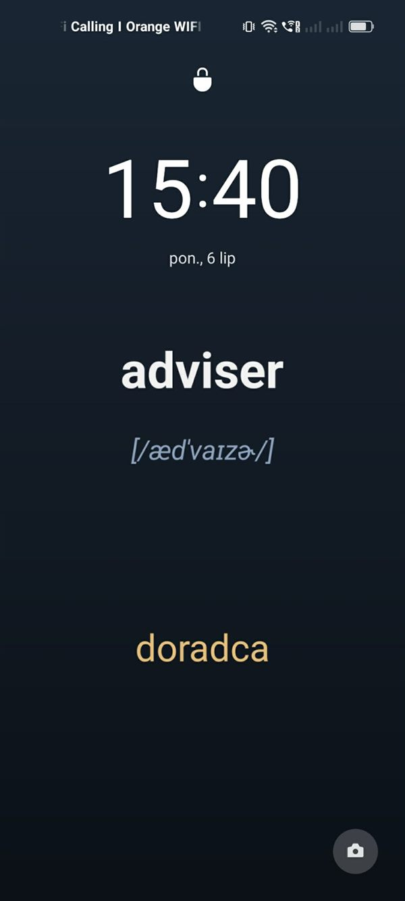

Nauka bez otwierania aplikacji
Ucz się słówek przy każdym spojrzeniu na telefon
Odblokowujesz telefon ponad 100 razy dziennie. AutoFiszki wykorzystują każdą z tych chwil: na ekranie blokady czekają fiszki ze słówkami, które akurat powtarzasz.
Android 8.0 lub nowszy · aplikacja po polsku

Proces
Jak to działa?
Trzy proste kroki — potem nauka dzieje się sama.
Wybierz talię
Angielski, hiszpański, stolice świata albo pierwiastki chemiczne. W taliach językowych słowa są ułożone od najczęściej używanych, więc zaczynasz od tych, na które faktycznie trafisz w rozmowie.
Fiszki trafiają na ekran blokady
Aplikacja co jakiś czas podmienia tapetę ekranu blokady na Twoje aktualne słówka. Wystarczy, że sięgniesz po telefon, a powtórka dzieje się przy okazji.
Utrwalaj w krótkich sesjach
Algorytm FSRS‑4.5 wyznacza powtórkę wtedy, gdy dane słowo zaczyna Ci umykać. Każdą kartę oceniasz jednym dotknięciem: Powtórz, Trudne, Dobre albo Łatwe.
Możliwości
Wszystko, czego potrzebujesz do nauki słówek
Tylko to, co faktycznie pomaga zapamiętywać słówka.
Nauka na ekranie blokady
Słówka widzisz przy każdym zerknięciu na telefon. To setki mikropowtórek dziennie, bo na ekran blokady i tak patrzysz częściej niż gdziekolwiek indziej.
Inteligentne powtórki FSRS‑4.5
Nowoczesny algorytm rozłożonych w czasie powtórek, następca klasycznego SM‑2 znanego z Anki. Pokazuje słowo dokładnie wtedy, gdy masz je zaraz zapomnieć.
Edytor wyglądu ekranu blokady
Do wyboru gotowe szablony wyglądu, a każdy można dostroić: układ, styl i liczbę słów na tapecie ustawiasz we wbudowanym edytorze.
Statystyki i seria dni
Liczba powtórek, stan każdej karty i seria kolejnych dni nauki. Trudno odpuścić, kiedy licznik serii rośnie już drugi tydzień.
Wymowa i zapis fonetyczny
Każde angielskie słowo ma transkrypcję IPA, a wbudowany przewodnik fonetyczny uczy, jak ją czytać.
Prywatność i offline
Aplikacja nie ma nawet uprawnienia dostępu do internetu, więc Twoje dane fizycznie nie mogą nigdzie wypłynąć. Konto i rejestracja też są zbędne.
Zawartość
Gotowe talie w cenie aplikacji
Instalujesz i uczysz się od pierwszej minuty. Ręczne wpisywanie słówek nie jest do niczego potrzebne.
Angielski: fundament
2859 najczęstszych słów z listy NGSL, z polskimi tłumaczeniami i zapisem fonetycznym IPA. Po opanowaniu rozumiesz ~92% codziennego języka mówionego.
Hiszpański: fundament
2500 najczęstszych hiszpańskich słów z polskimi tłumaczeniami, wybranych na podstawie milionów prawdziwych zdań z korpusu Tatoeba. Pokrywają około 92% mowy potocznej.
Stolice świata
Europa, Azja, Afryka, obie Ameryki i Oceania, osobno albo wszystkie naraz. Przydatne w szkole i za każdym razem, gdy ktoś przy stole zapyta o stolicę Kazachstanu.
Pierwiastki chemiczne
Symbole i nazwy pierwiastków. Zamiast kuć przed sprawdzianem, powtarzasz je przy okazji, na ekranie blokady.
Cena
Jedna cena. Na zawsze.
Kupujesz raz i aplikacja jest Twoja. Tak, jak kiedyś kupowało się programy.
- Wszystkie talie: angielski, hiszpański, stolice, pierwiastki
- Nauka na ekranie blokady + sesje powtórek FSRS
- Wszystkie przyszłe aktualizacje w cenie
- Zero reklam, teraz i na zawsze
- Zero zbierania danych, działa offline
- Bez konta i rejestracji
Mniej niż bilet do kina, a zostaje z Tobą na lata.
Dlaczego nie subskrypcja?
Typowa aplikacja do nauki języków kosztuje 30–60 zł miesięcznie i przerywa naukę reklamami, jeśli nie płacisz.
Narzędzie do nauki powinno działać jak dobry słownik: raz kupione, służy latami. Bez okresów próbnych, odblokowywania funkcji i dopłat za „premium".
Pytania i odpowiedzi
Częste pytania
Kiedy aplikacja będzie dostępna?
Już niedługo — trwają ostatnie przygotowania do publikacji w Google Play. W dniu premiery na tej stronie pojawi się link do sklepu.
Czy to na pewno jednorazowy zakup?
Tak. Płacisz raz w Google Play i aplikacja jest Twoja, razem ze wszystkimi taliami i przyszłymi aktualizacjami. Nie ma subskrypcji, mikropłatności ani wersji premium.
Czy w aplikacji są reklamy?
Nie ma i nigdy nie będzie. Skoro płacisz za aplikację, nie jesteś produktem.
Jak działa nauka na ekranie blokady?
AutoFiszki generują tapetę ekranu blokady z Twoimi aktualnymi fiszkami i co jakiś czas ją odświeżają. Za każdym razem, gdy sięgasz po telefon, widzisz słówka bez otwierania czegokolwiek. Wygląd tapety ustawiasz we wbudowanym edytorze.
Co to jest FSRS i czym różni się od zwykłych fiszek?
FSRS‑4.5 (Free Spaced Repetition Scheduler) to nowoczesny algorytm powtórek rozłożonych w czasie. Na podstawie Twoich ocen przewiduje, kiedy zaczniesz zapominać dane słowo, i właśnie wtedy je pokazuje. W praktyce robisz mniej powtórek, a pamiętasz więcej.
Jakich języków mogę się uczyć?
Obecnie w aplikacji są talie fundamentalne angielskiego (2859 słów) i hiszpańskiego (2500 słów) z polskimi tłumaczeniami, a do tego talie stolic świata i pierwiastków chemicznych. Kolejne talie pojawią się w darmowych aktualizacjach.
Czy aplikacja wymaga internetu albo konta?
Nie. Wszystkie dane są na Twoim telefonie, nauka działa w pełni offline i nie musisz zakładać żadnego konta.
Na jakich telefonach działa?
Na telefonach z Androidem 8.0 lub nowszym. Wersja na iOS nie jest obecnie planowana.
Twój telefon i tak będzie odblokowywany 100 razy dziennie.
Niech chociaż uczy Cię słówek.
Wkrótce w Google Play